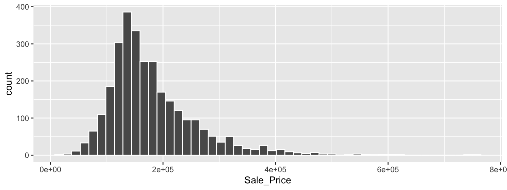
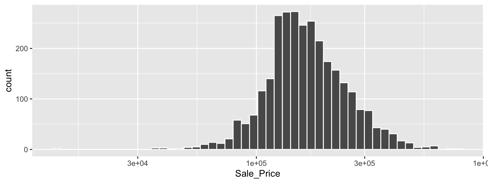

Code
library(modeldata) # This is also loaded by the tidymodels package
data(ames)
# or, in one line:
data(ames, package = "modeldata")
dim(ames)[1] 2930 74In this chapter, we’ll introduce the Ames housing data set (De Cock 2011), which we will use in modeling examples throughout this book. Exploratory data analysis, like what we walk through in this chapter, is an important first step in building a reliable model. The data set contains information on 2,930 properties in Ames, Iowa, including columns related to:
Our modeling goal is to predict the sale price of a house based on other information we have, such as its characteristics and location.
The raw housing data are provided in De Cock (2011), but in our analyses in this book, we use a transformed version available in the modeldata package. This version has several changes and improvements to the data.1 For example, the longitude and latitude values have been determined for each property. Also, some columns were modified to be more analysis ready. For example:
In the raw data, if a house did not have a particular feature, it was implicitly encoded as missing. For example, 2,732 properties did not have an alleyway. Instead of leaving these as missing, they were relabeled in the transformed version to indicate that no alley was available.
The categorical predictors were converted to R’s factor data type. While both the tidyverse and base R have moved away from importing data as factors by default, this data type is a better approach for storing qualitative data for modeling than simple strings.
We removed a set of quality descriptors for each house since they are more like outcomes than predictors.
To load the data:
library(modeldata) # This is also loaded by the tidymodels package
data(ames)
# or, in one line:
data(ames, package = "modeldata")
dim(ames)[1] 2930 74Let’s start our exploratory data analysis by focusing on the outcome we want to predict: the last sale price of the house (in USD). We can create a histogram to see the distribution of sale prices in Figure @ref(fig:ames-sale-price-hist).
library(tidymodels)
tidymodels_prefer()
ggplot(ames, aes(x = Sale_Price)) +
geom_histogram(bins = 50, col= "white")
This plot shows us that the data are right-skewed; there are more inexpensive houses than expensive ones. The median sale price was $160,000, and the most expensive house was $755,000. When modeling this outcome, a strong argument can be made that the price should be log-transformed. The advantages of this type of transformation are that no houses would be predicted with negative sale prices and that errors in predicting expensive houses will not have an undue influence on the model. Also, from a statistical perspective, a logarithmic transform may also stabilize the variance in a way that makes inference more legitimate. We can use similar steps to now visualize the transformed data, shown in Figure @ref(fig:ames-log-sale-price-hist).
ggplot(ames, aes(x = Sale_Price)) +
geom_histogram(bins = 50, col= "white") +
scale_x_log10()
While not perfect, this will likely result in better models than using the untransformed data, for the reasons just outlined.
The disadvantages of transforming the outcome mostly relate to interpretation of model results.
The units of the model coefficients might be more difficult to interpret, as will measures of performance. For example, the root mean squared error (RMSE) is a common performance metric used in regression models. It uses the difference between the observed and predicted values in its calculations. If the sale price is on the log scale, these differences (i.e., the residuals) are also on the log scale. It can be difficult to understand the quality of a model whose RMSE is 0.15 on such a log scale.
Despite these drawbacks, the models used in this book use the log transformation for this outcome. From this point on, the outcome column is prelogged in the ames data frame:
ames <- ames %>% mutate(Sale_Price = log10(Sale_Price))Another important aspect of these data for our modeling is their geographic locations. This spatial information is contained in the data in two ways: a qualitative Neighborhood label as well as quantitative longitude and latitude data. To visualize the spatial information, let’s use both together to plot the data on a map in Figure @ref(fig:ames-map).

We can see a few noticeable patterns. First, there is a void of data points in the center of Ames. This corresponds to the campus of Iowa State University where there are no residential houses. Second, while there are a number of adjacent neighborhoods, others are geographically isolated. For example, as Figure @ref(fig:ames-timberland) shows, Timberland is located apart from almost all other neighborhoods.

Figure @ref(fig:ames-mitchell) visualizes how the Meadow Village neighborhood in southwest Ames is like an island of properties inside the sea of properties that make up the Mitchell neighborhood.

A detailed inspection of the map also shows that the neighborhood labels are not completely reliable. For example, Figure @ref(fig:ames-northridge) shows some properties labeled as being in Northridge are surrounded by homes in the adjacent Somerset neighborhood.

Also, there are ten isolated homes labeled as being in Crawford that, as you can see in Figure @ref(fig:ames-crawford), are not close to the majority of the other homes in that neighborhood.

Also notable is the “Iowa Department of Transportation (DOT) and Rail Road” neighborhood adjacent to the main road on the east side of Ames, shown in Figure @ref(fig:ames-dot-rr). There are several clusters of homes within this neighborhood as well as some longitudinal outliers; the two homes farthest east are isolated from the other locations.

As described in Chapter @ref(software-modeling), it is critical to conduct exploratory data analysis prior to beginning any modeling. These housing data have characteristics that present interesting challenges about how the data should be processed and modeled. We describe many of these in later chapters. Some basic questions that could be examined during this exploratory stage include:
Is there anything odd or noticeable about the distributions of the individual predictors? Is there much skewness or any pathological distributions?
Are there high correlations between predictors? For example, there are multiple predictors related to house size. Are some redundant?
Are there associations between predictors and the outcomes?
Many of these questions will be revisited as these data are used throughout this book.
This chapter introduced the Ames housing data set and investigated some of its characteristics. This data set will be used in later chapters to demonstrate tidymodels syntax. Exploratory data analysis like this is an essential component of any modeling project; EDA uncovers information that contributes to better modeling practice.
The important code for preparing the Ames data set that we will carry forward into subsequent chapters is:
library(tidymodels)
data(ames)
ames <- ames %>% mutate(Sale_Price = log10(Sale_Price))For a complete account of the differences, see https://github.com/topepo/AmesHousing/blob/master/R/make_ames.R.↩︎